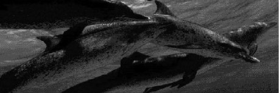

The great whales such as the blue and humpback whales use baleen plates instead of teeth to filter krill out of the plankton and belong to the suborder, Mysteceti. Dolphins are the smallest members of the suborder Odontoceti, or toothed whales, which also includes the giant sperm and killer whales.
There are 31 species of true dolphins. About 21 of these species are found in Australian waters and most of them around Victoria's coastline. Most dolphins have the "typical" streamlined shape, with a pointed beak and prominent dorsal fin. The largest of the dolphins is the bottlenose dolphin which grows to over 4 metres and can weigh over 650 kg. The smallest is Hector's dolphin at about 1.5 metres and 60 kg. All dolphins are "homodonts" which means that all their teeth are the same, not having molars and incisors like most mammals. Their teeth are sharp and peg-like in shape and function for grabbing prey, not for biting out chunks or chewing. Dolphins can be aged by counting the growth rings in their teeth just like in a tree.
Dolphins are mammals, not fish. They are warm blooded like man, and give birth to one baby called a calf at a time. At birth a bottlenose dolphin calf is about 90-130 cms long and will grow to approx. 4 metres, living up to 40 years.They are highly sociable animals, living in pods which are fairly fluid, with dolphins from other pods interacting with each other from time to time.
Dolphins use their powerful tail flukes in an up and down motion to move through the water. They also use their tails when hunting, hitting a fleeing fish up into the air with their tail, stunning it, then scooping the fish up when it falls back into the water. A dolphin slapping its tail on the water in the wild may be a sign of annoyance, or a warning to other dolphins of danger.
Their pectoral flippers are used to steer them through the water, and they also use them to stroke one another, increasing the social bond between them. Dolphin "friends" may swim along face to face touching flippers. Dolphins that appear to be closely bonded may swim in synchrony, twisting, turning and swimming in perfect harmony together.
Their teeth are interlocking rows of conical pegs, suitable for holding slippery fish. They eat their fish whole, head first. In the wild an open mouth is a sign of aggression, as is head nodding. A sign of greater aggression is violent jaw clapping.
Dolphins breathe through their blowhole located at the top of their head. A dolphin may empty and refill its lungs in less than a fifth of a second. As the dolphin breathes the air leaves the blowhole at speeds of over 100mph. Complex nerve endings around the blowhole sense pressure changes so the dolphin knows exactly when the blowhole is in or nearing the air and can be opened. Water in a dolphin's blowhole will actually drown it so powerful muscles close the blowhole as it dives under the water again.
The dolphin's eyes produce a special slippery secretion which protects the eyes from foreign objects and water friction. To sleep, a dolphin must shut down only half of its brain, as its breathing is under voluntary control. Dolphins take short cat-naps, floating just below the surface, then slowly rising to breathe. Often dolphins are very active during night time, for some this is their main feeding time.
The dolphin's skin is completely smooth allowing the dolphin to move easily through the water, and also reduce heat loss. Their skin may bear rake marks from other dolphins teeth during play or mating, and can easily become badly sunburnt if they strand. Their bodies are very streamlined so they may swim at high speeds through the water, and an example of this is their ears. Dolphin's ears are barely noticeable marked only by a small hole just behind the eye. In a bottlenose dolphin the ear is about 5-6 cm behind the eye and only 2-3 mm in diameter.
Dolphins are able to dive to great depths, and also leap to great heights. They may leap to avoid predators or to show how powerful they are to females at mating time. Noisy splashing jumps may also be used to herd fish.
